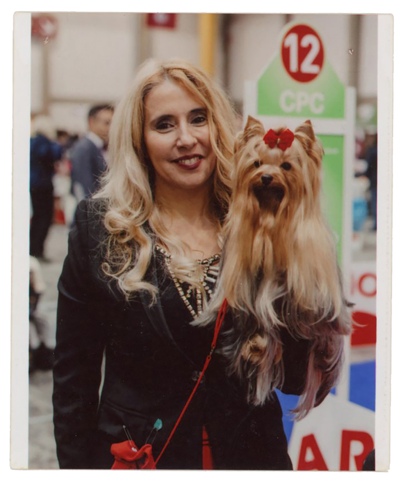
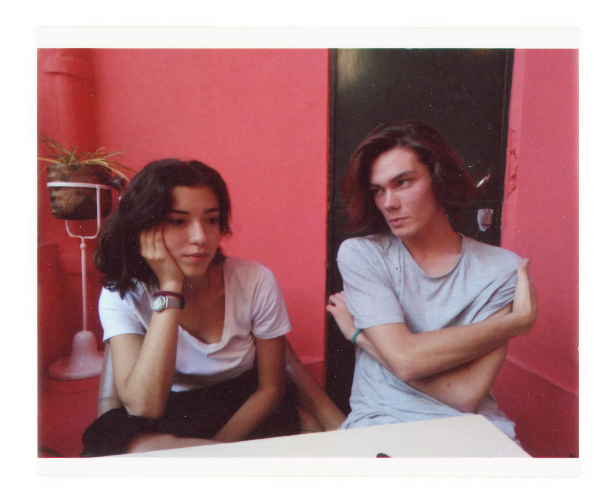
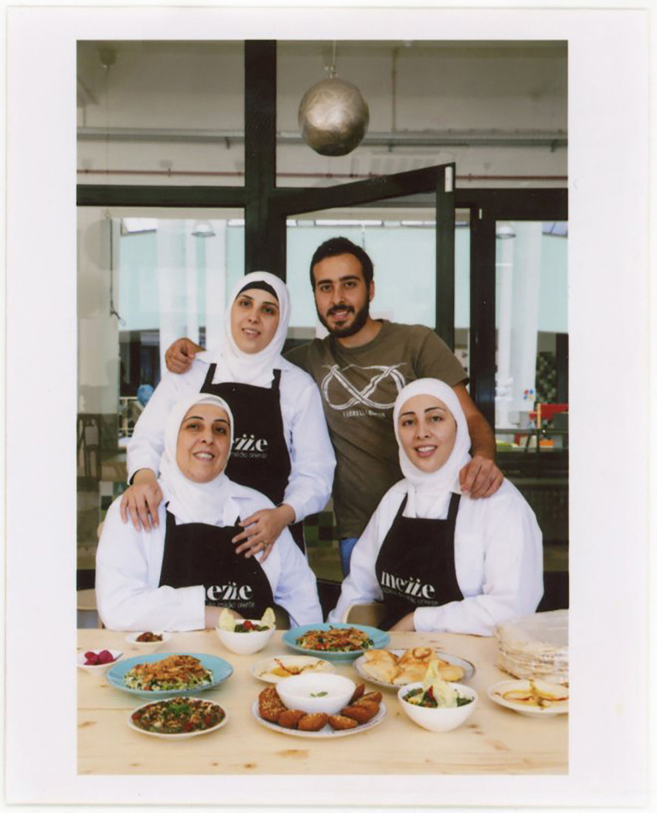
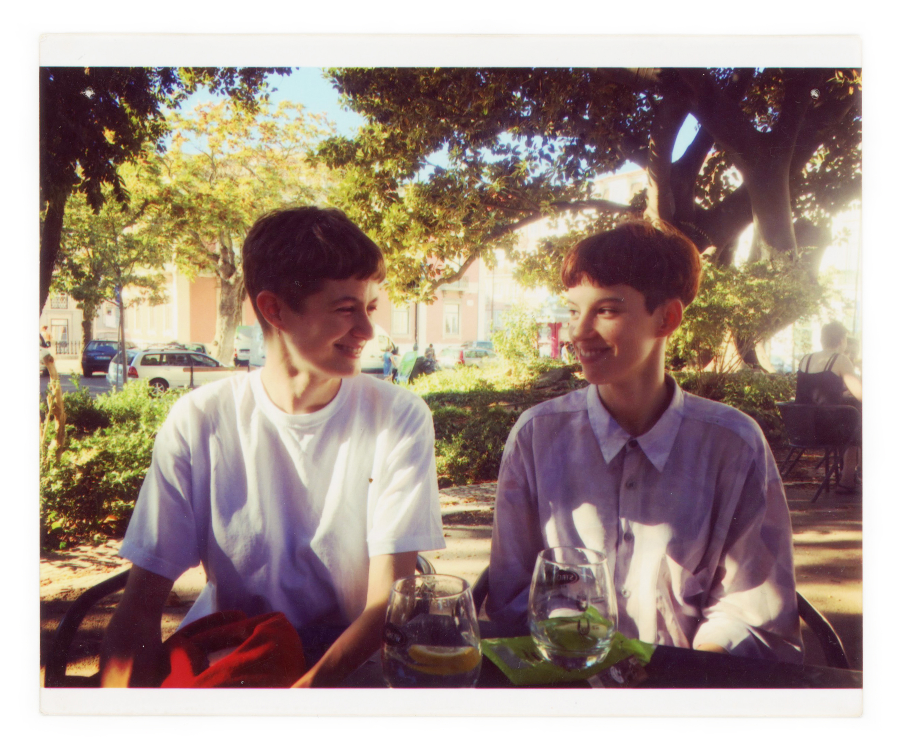
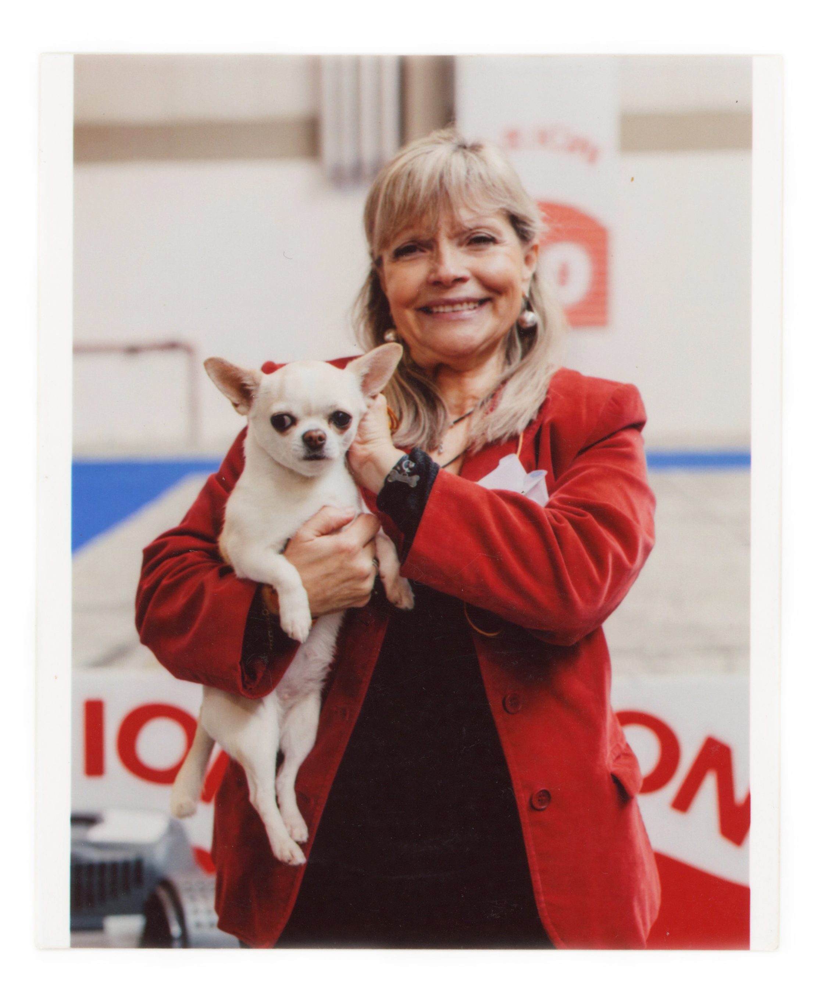
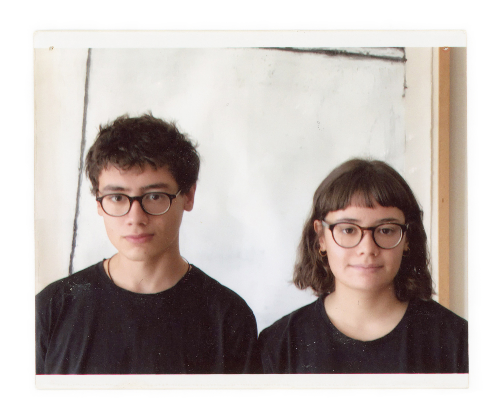
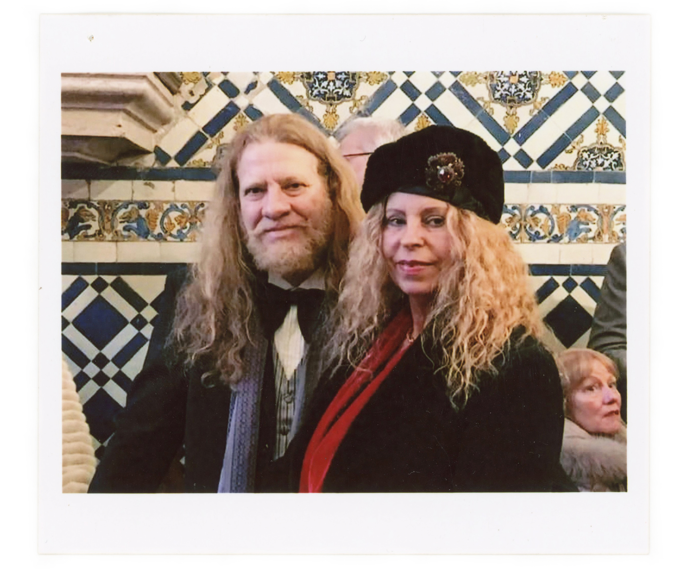

Thank you: Ana Isabel Aguiar, Ana Patrícia Jorge, Ana Pires, Ana Lúcia, Ana Vasco, Ana Ventura, Andji Peres, Ângelo Ferreira, Anísio Franco, António Bollaño, António Godinho, Amy, Barbicha, Beate Guimarães, Binete Undonque, Blacky, Bliss, Carla Vendas, Catarina Garcia, Cindy Gonçalves, Conceição Trindade, Cristina Sampaio, Diogo Friaes Coelho, Domingas, Elisa Lasprilla, Ernesto, Fatima Ghannam, Fernando Cruz, Filipa Moreira, Francisco Lima, Gabriela Rolho, Ginja, Guilherme Garcia, Guilherme De Sousa, Helena Pinto, Heloise Marechal, Henrique Martins, Henrique Neto, Hugo Lima, Hugo Nunes, Igrat Castilho, Imelda Costa, Inês Jacob, Inês Pando, Inês Pires, Isabel Barbosa Da Costa, Jericó, Joana Barreto, João Baptista, João Galego, João Godinho, João Luís Tomás, João Santos, Jorge Fernandes, Laura Monteiro, Licína Ferreira, Lola Cabral, Luís Baptista,Marco Nunes, Marco Paiva, Margarida Magalhães,Margarida Pinto Coelho,Maria Castelo Branco,Maria Helena Rocha, Maria José Neto,Maria Teresa Godinho,Maria Trindade, Maria Ventura,Maria Zebá, Marta Barreto,Mateus, Miguel Canto E Castro,Miguel Cruz,Modi, Natacha Cordeiro, Nela Duarte,Nelson Andrade,Nina Cabral,Norys Sabina, Nuno Miguel Paiva,Nuno Pires,Oito, Olivia Rodrigues,Oxana Grenkova, Paulo Villas-Boas,Pedro Andrade, Pedro Azevedo,Pedro Guimarães, Pedro Reis,Pedro Vendas, Pedro Vieira,Rafael Baptista, Rafat Dabbah,Raphael Decoster, Rebecca Sugar, Ricardo Jacob, Rita Amaro, Roberto Costa, Rodrigo Andrade, Rosinda Carvalho, Sara Costa, Sara Martins, Simão Pais, Soraya Mira, Tatiana Grenkova, Teresa Aguiar, Teresa Canto E Castro, Tiago Raimundo, Tibério Bento, Vera Matias, Vera Prokic, Volpina Castilho, Zebá